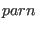
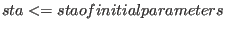
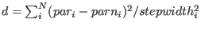
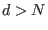

If the program calcsta has been set up, the fitting is started
by the command (in the example you should go to the directory /mcphas/examples/cecu2a/fit)
:
simannfit 10 [-t 1000][-s 100000] [-n 200] mcphas.jjj [and possible other input parameter files].
- The ”10” in the command means that the initial statistical
”temperature” of the algorithm
is set to 10.
- Option -t sets time limit until program end (in seconds).
- Option -s gives maximal number of iteration steps to be done.
- Option -n allows to store every 200 steps the parametersets in a table in results/simannfit.0.
- Option -p 30 probes solution, i.e. runs simannfit , stepwidths are not decreased during
fitting, if parameter set  is found with

then all sets par in results/simannfit.1 are scanned and
distance
 is calculated. If
(=number of parameters) for
for all sets par, then is appended to the list in results/simannfit.1
up to 20 parameters are appended to this list, after that the program stops
- in this way a series of equally good solutions can be explored.
- option -w 1.4 before starting simannfit, multiply all stepwidths by factor 1.4
Note that the user written program calcsta has to be in the
directory where simannfit is started from.
The program generates for each parameter a histogram file showing the number of occurrences
of a certain parameter value in solutions, where sta decreased.